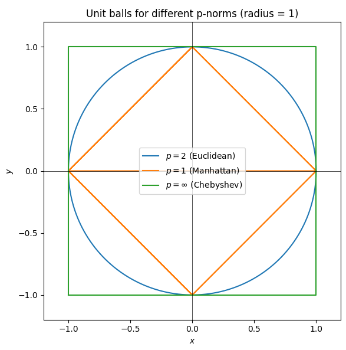

A vector is a mathematical entity characterized by both magnitude and direction. Vectors are essential in various fields such as linear algebra, calculus, physics, computer science, data analysis, and machine learning. In the context of NumPy, vectors are represented as one-dimensional arrays, enabling efficient computation and manipulation. This guide delves into the definition of vectors, their properties, and the operations that can be performed on them using NumPy, complemented by practical examples to illustrate each concept.
A vector space over a field $\mathbb{F}$ (here the reals $\mathbb{R}$) is a set equipped with vector addition and scalar multiplication that satisfy eight axioms (closure, associativity, identity, inverses, distributive laws, etc.). The canonical example is the n‑dimensional real coordinate space $\mathbb{R}^n$.
Formal definition. An element $\mathbf v \in \mathbb{R}^n$ is an ordered $n$-tuple of real numbers
$$ \mathbf v = (v_1,\dots,v_n) \equiv \sum_{i=1}^n v_i\mathbf e_i $$
where $\{\mathbf e_i\}_{i=1}^n$ is the standard basis with $\mathbf e_i$ having a 1 in the $i$-th position and zeros elsewhere.
A vector encodes magnitude and direction relative to the origin. In data‑science terms, it stores the feature values of one sample.
NumPy quick‑start.
import numpy as np
v = np.array([4, -2, 7]) # element of R^3
type(v), v.shape # (numpy.ndarray, (3,))Vectors can be written in two orientations — row vectors and column vectors—each serving different roles in computations. The choice of orientation determines how vectors interact with matrices and with each other.
A row vector is a $1 \times n$ matrix, meaning it has one row and $n$ columns. Its elements are laid out horizontally:
$$ v = \begin{bmatrix} v_1 & v_2 & \cdots & v_n \end{bmatrix} $$
$$\vec v_{\text{row}}A \in \mathbb{R}^{1 \times m}$$
Example:
$$ \vec v_{\text{row}} = [1,2,3] \quad\text{is a }1\times3\text{ row vector in }\mathbb{R}^3. $$
A column vector is an $n \times 1$ matrix, with elements displayed vertically:
$$ v = \begin{bmatrix} v_1\\ v_2\\ \vdots\\ v_n \end{bmatrix} $$
$$A\vec v_{\text{col}} \in \mathbb{R}^{m \times 1}$$
Example:
$$ v = \begin{bmatrix} 1\\ 2\\ 3 \end{bmatrix} $$
$$ \text{is a }3\times1\text{ column vector in }\mathbb{R}^3 $$
The transpose operation switches between row and column orientation:
Denoted by a superscript “$^T$”:
$$\vec v_{\text{row}}^T = \vec v_{\text{col}}$$
and
$$\vec v_{\text{col}}^T = \vec v_{\text{row}}$$
If $v$ is a matrix (or vector) with entries $v_{ij}$, then
$$v^T_{ij} = v_{ji}$$
Why Transpose Matters:
$$\vec u \cdot \vec v = \vec u_{\text{row}}\vec v_{\text{col}} = \sum_i u_iv_i$$
Example of Transpose:
$$ v = \begin{bmatrix} 1 & 2 & 3 \end{bmatrix} $$
$$ v^T = \begin{bmatrix} 1\\ 2\\ 3 \end{bmatrix} $$
A norm $||\cdot||$ is a function that assigns a non-negative “length” or “size” to each vector in a vector space, satisfying three core properties:
Positivity:
$$||\vec v|| \ge 0$$
for all $\vec v$, and
$$||\vec v|| = 0$$
if and only if $\vec v$ is the zero vector.
Homogeneity (Scalability):
$$||\alpha \vec v|| = |\alpha|||\vec v||$$
for any scalar $\alpha$.
Triangle Inequality:
$$||\vec u + \vec v|| \le ||\vec u|| + ||\vec v||$$
for any vectors
$$\vec u, \vec v$$
The p-norm (or $L^p$ norm) is a family of norms parameterized by $p \ge 1$, defined for a vector
$$\vec v = (v_1, v_2, \ldots, v_n)$$
as
$$ \lVert \vec v \rVert_p = \left( \sum_{i=1}^{n} \lvert v_i \rvert^p \right)^{1/p} $$
Why the p-Norm Matters
Common Special Cases:
| $p$ | Name | Unit-Ball in $\mathbb{R}^2$ | Geometric Intuition |
|---|---|---|---|
| 1 | Manhattan | Diamond (rotated square) $\diamond$ | Distance measured along axes (like city blocks) |
| 2 | Euclidean | Circle $\bigcirc$ | “Straight-line” distance in the plane |
| $\infty$ | Chebyshev | Axis-aligned square $\square$ | Maximum coordinate difference (chess-king moves) |
Unit-radius sketches:

NumPy’s linalg.norm function makes it easy:
import numpy as np
from numpy.linalg import norm
v = np.array([v1, v2, ..., vn])
# L1 norm: sum of absolute values
l1 = norm(v, ord=1)
# L2 norm: Euclidean length (default)
l2 = norm(v) # same as norm(v, ord=2)
# Infinity norm: maximum absolute component
linf = norm(v, ord=np.inf)
print(f"L1: {l1}, L2: {l2}, L∞: {linf}")ord=1 computes $\sum_i |v_i|$.ord=2 (or default) computes $\sqrt{\sum_i v_i^2}$.ord=np.inf computes $\max_i |v_i|$.Why Norms Matter in Practice:
Similarity and Distance
In algorithms like k-Nearest Neighbors (k-NN), the choice of norm directly affects which points are deemed “closest,” altering classification or regression results.
Optimization and Regularization
Feasible Regions
When you enforce a norm constraint (e.g., $||x||_p \le 1$), the shape of that feasible set changes with $p$, influencing which solutions are accessible in constrained optimization.
For $\mathbf{u},\mathbf{v}\in\mathbb{R}^n$ the sum is
$$ \mathbf{u}+\mathbf{v}= \bigl(u_1+v_1,u_2+v_2,\dots,u_n+v_n\bigr) $$
import numpy as np
a = np.array([9, 2, 5])
b = np.array([-3, 8, 2])
res = np.add(a, b) # or simply a + b
print(res) # → [ 6 10 7]Complexity. $O(n)$ arithmetic operations; NumPy runs this in native C, so it is vectorised and avoids Python loops.
Typical uses.
Given a scalar $\alpha\in\mathbb{R}$ and $\mathbf{u}\in\mathbb{R}^n$,
$$ \alpha\mathbf{u}= \bigl(\alpha u_1,\alpha u_2,\dots,\alpha u_n\bigr) $$
Multiplies the magnitude by $|\alpha|$; for negative $\alpha$ the direction is flipped (180° rotation).
v = np.array([6, 3, 4])
alpha = 2
scaled = alpha * v # element-wise; same as np.multiply(alpha, v)
print(scaled) # → [12 6 8]Distributive law.
$$\alpha(\mathbf{u}+\mathbf{v})=\alpha\mathbf{u}+\alpha\mathbf{v}$$
Useful for normalising vectors to unit length: u / np.linalg.norm(u).
Definition.
$$ \mathbf{u}\cdot\mathbf{v}= \sum_{i=1}^{n}u_i v_i. $$
Geometry.
$$ \mathbf{u}\cdot\mathbf{v}=\lVert\mathbf{u}\rVert_2\lVert\mathbf{v}\rVert_2 \cos\theta, $$
so it captures both magnitudes and their relative orientation $\theta$.
u = np.array([9, 2, 5])
v = np.array([-3, 8, 2])
dp = np.dot(u, v) # or u @ v in NumPy ≥1.10
print(dp) # → -1An output of zero indicates orthogonality.
Negative values imply an angle greater than 90°, explaining the $-1$ above (≈90.6°).
$$\displaystyle \mathrm{proj}_{\mathbf{v}}(\mathbf{u}) = \frac{\mathbf{u}\cdot\mathbf{v}}{\lVert\mathbf{v}\rVert_2^2}\mathbf{v}$$
For $\mathbf{u},\mathbf{v}\in\mathbb{R}^3$,
$$ \mathbf{u}\times\mathbf{v} = \begin{vmatrix} \mathbf{i} & \mathbf{j} & \mathbf{k}\\ u_1 & u_2 & u_3\\ v_1 & v_2 & v_3 \end{vmatrix} = \bigl(u_2v_3-u_3v_2, u_3v_1-u_1v_3, u_1v_2-u_2v_1\bigr). $$
The resulting vector is perpendicular to the input pair; its magnitude equals the area of the parallelogram spanned by $\mathbf{u}$ and $\mathbf{v}$.
u = np.array([9, 2, 5])
v = np.array([-3, 8, 2])
c = np.cross(u, v)
print(c) # → [-36 -33 78]Use the right-hand rule to fix the orientation: curling your fingers from u to v, your thumb points along u × v.
From the dot-product identity above:
$$ \theta = \arccos\!\Bigl(\frac{\mathbf{u}\cdot\mathbf{v}} {\lVert\mathbf{u}\rVert_2\lVert\mathbf{v}\rVert_2}\Bigr) \qquad 0\le\theta\le\pi $$
u = np.array([9, 2, 5])
v = np.array([-3, 8, 2])
cosθ = np.dot(u, v) / (np.linalg.norm(u) * np.linalg.norm(v))
cosθ = np.clip(cosθ, -1.0, 1.0) # guards against tiny FP overshoots
θ_rad = np.arccos(cosθ)
θ_deg = np.degrees(θ_rad)
print(θ_rad) # → 1.5817 rad
print(θ_deg) # → 90.62 °Edge cases to watch.
np.clip prevents nan.For any binary ufunc $f$ (e.g., +, *, np.maximum), NumPy will try to apply
$$ C = f(A, B) $$
element-wise if and only if the two input shapes are broadcast-compatible. Compatibility is checked right-to-left over the axes:
Equal length rule.
Pad the shorter shape on the left with 1’s so both shapes have the same rank.
Axis match rule.
For every axis $k$ from the last to the first
When axis $k$ is stretched, NumPy does not copy data; it creates a strided view that repeats the existing bytes in memory—so the cost is $O(1)$ extra space.
Tip. Think of a dimension of length 1 as a wildcard that can masquerade as any size.
import numpy as np
arr = np.array([1, 2, 3, 4]) # shape (4,)
alpha = 2 # shape () — rank-0
print("arr + alpha:", arr + alpha) # [3 4 5 6]
print("arr * alpha:", arr * alpha) # [2 4 6 8]The scalar behaves like an invisible array of shape (4,) here.
Common uses:
X -= X.mean(axis=0) subtracts the row-vector of feature means from every sample at once.logits - logits.max(axis=1, keepdims=True) prevents overflow by broadcasting a column vector of maxima.M = np.arange(12).reshape(3, 4) # shape (3,4)
col = np.array([10, 20, 30])[:,None] # shape (3,1)
row = np.array([1, 2, 3, 4]) # shape (4,)
print("M + col →\n", M + col) # each row shifted by its col entry
print("M + row →\n", M + row) # each column shifted by row entryShape algebra (after left-padding):
| Operand | Raw shape | Padded to (3, 4) | Compatible? |
|---|---|---|---|
M |
(3, 4) | (3, 4) | — |
col |
(3, 1) | (3, 1) | ✓ (second axis 1) |
row |
(4,) | (1, 4) | ✓ (first axis 1) |
The result is shape (3, 4) in both cases—no materialised tile of col or row.
a = np.empty((5, 4))
b = np.empty((3, 1, 4))
# a + b -> ValueError: operands could not be broadcast together ...Reason: after padding, shapes are (1,5,4) and (3,1,4); axis 0 demands 1 vs 3 (neither is 1), so rule 2 fails.
out[:] += x is safe; out = out + x makes a new array instead of updating in-place.np.tile often degrades performance and uses $O(nm)$ extra RAM.np.expand_dims or None ([:, None]) to add axes consciously and avoid accidental shape mismatches.Vectors and their operations are integral to numerous practical applications across various domains. Mastering these concepts enables efficient data manipulation, analysis, and the implementation of complex algorithms.
Beyond single-element access, vectors allow for the manipulation of multiple elements simultaneously using slicing or advanced indexing. This capability is essential for batch processing and data transformation tasks.
# Creating a 1D array
arr = np.array([1, 2, 3, 4, 5, 6, 7, 8])
# Modifying multiple elements
arr[2:5] = [10, 11, 12]
print(arr)Expected output:
[ 1 2 10 11 12 6 7 8]arr[2:5] = [10, 11, 12] assigns the values 10, 11, and 12 to the elements at indices 2, 3, and 4, respectively.[1, 2, 3, 4, 5, 6, 7, 8] is updated to [1, 2, 10, 11, 12, 6, 7, 8].Boolean indexing enables the selection of elements based on conditional statements, allowing for dynamic and flexible data selection without the need for explicit loops. This technique is highly efficient and widely used in data analysis.
# Creating a 1D array
arr = np.array([1, 2, 3, 4, 5, 6, 7, 8])
# Boolean indexing
bool_idx = arr > 5
print(arr[bool_idx])Expected output:
[6 7 8]arr > 5 creates a boolean array [False, False, False, False, False, True, True, True].arr[bool_idx] uses this boolean array to filter and retrieve elements where the condition arr > 5 is True, resulting in [6, 7, 8].All examples are self-contained—each row declares the minimal variables it needs—so you can copy-paste any cell directly into any IDE.
| Operation | Description & Formula | Example Code | Expected Output (shape) |
|---|---|---|---|
| Vector Addition | Element-wise sum $c_i = a_i + b_i$ |
arr_1 = np.array([9, 2, 5])arr_2 = np.array([-3, 8, 2])np.add(arr_1, arr_2) |
[ 6 10 7] (3,) |
| Scalar Multiplication | Scale a vector $c_i = k a_i$ |
scalar = 2arr = np.array([6, 3, 4])scalar * arr |
[12 6 8] (3,) |
| Dot Product | Projection / cosine similarity $a \cdot b = \sum_i a_i b_i$ |
arr_1 = np.array([9, 2, 5])arr_2 = np.array([-3, 8, 2])np.dot(arr_1, arr_2) |
-1 () |
| Cross Product | 3-D vector orthogonal to both inputs $a \times b$ |
arr_1 = np.array([9, 2, 5])arr_2 = np.array([-3, 8, 2])np.cross(arr_1, arr_2) |
[-36 -33 78] (3,) |
| Angle Between Vectors | $\theta = \arccos\!\left(\frac{a\cdot b}{\lVert a\rVert\,\lVert b\rVert}\right)$ | arr_1 = np.array([9, 2, 5])arr_2 = np.array([-3, 8, 2])angle = np.arccos(np.dot(arr_1, arr_2) / (np.linalg.norm(arr_1)*np.linalg.norm(arr_2)))np.round(angle, 3) |
1.582 rad |
| Broadcasting | NumPy automatically “stretches” smaller shapes so element-wise ops make sense. (vector ⇄ scalar shown here) |
arr = np.array([1, 2, 3, 4])scalar = 2arr + scalar, arr * scalar |
([3 4 5 6], [2 4 6 8]) |
Tiny Performance Tips:
np.dot & BLAS – use contiguous float64 arrays for best throughput.np.copy() downstream can explode memory; check arr.strides.